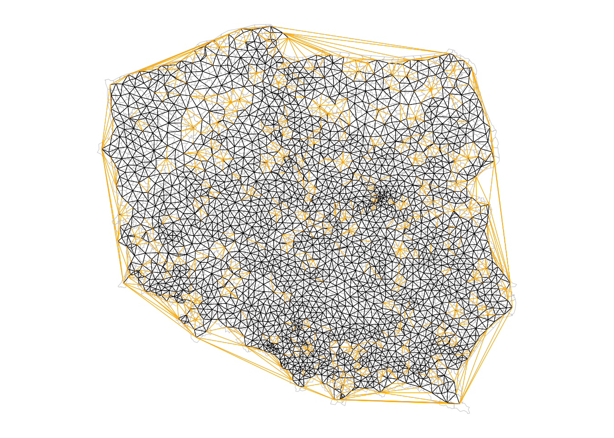
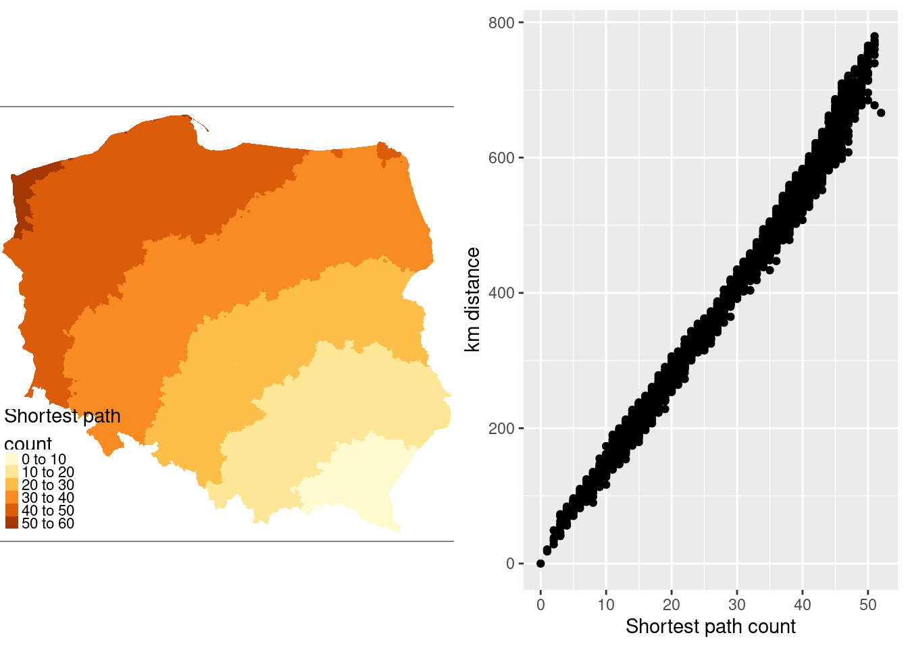
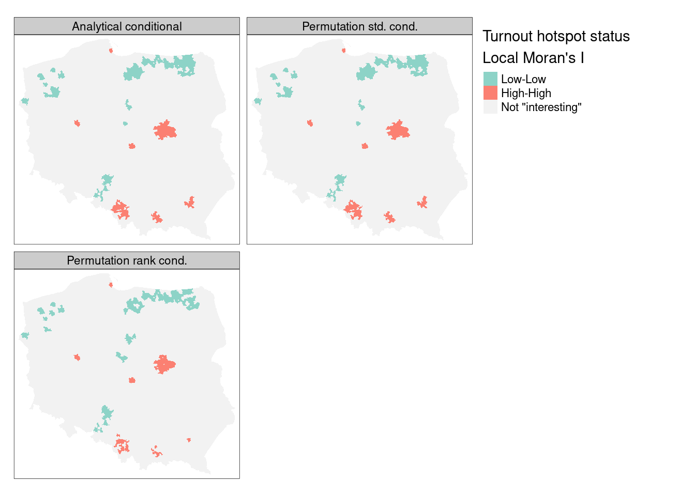

library(sf)
# Linking to GEOS 3.10.2, GDAL 3.4.3, PROJ 8.2.0; sf_use_s2() is TRUE14 Proximity and Areal Data
Areal units of observation are very often used when simultaneous observations are aggregated within non-overlapping boundaries. The boundaries may be those of administrative entities, and may be related to underlying spatial processes, such as commuting flows, but are usually arbitrary. If they do not match the underlying and unobserved spatial processes in one or more variables of interest, proximate areal units will contain parts of the underlying processes, engendering spatial autocorrelation. By proximity, we mean closeness in ways that make sense for the data generation processes thought to be involved. In cross-sectional geostatistical analysis with point support, measured distance makes sense for typical data generation processes. In similar analysis of areal data, sharing a border may make more sense, because that is what we do know, but we cannot measure the distance between the areas in as adequate a way.
By support of data we mean the physical size (length, area, volume) associated with an individual observational unit (measurement; see (featureattributes?)). It is possible to represent the support of areal data by a point, despite the fact that the data have polygonal support. The centroid of the polygon may be taken as a representative point, or the centroid of the largest polygon in a multi-polygon object. When data with intrinsic point support are treated as areal data, the change of support goes the other way, from the known point to a non-overlapping tessellation such as a Voronoi diagram or Dirichlet tessellation or Thiessen polygons often through a Delaunay triangulation using projected coordinates. Here, different metrics may also be chosen, or distances measured on a network rather than on the plane. There is also a literature using weighted Voronoi diagrams in local spatial analysis (see for example Boots and Okabe 2007; Okabe et al. 2008; She et al. 2015).
When the intrinsic support of the data is represented as points, but the underlying process is between proximate observations rather than driven chiefly by distance however measured between observations, the data may be aggregate counts or totals (polling stations, retail turnover) or represent a directly observed characteristic of the observation (opening hours of the polling station). Obviously, the risk of mis-representing the footprint of the underlying spatial processes remains in all of these cases, not least because the observations are taken as encompassing the entirety of the underlying process in the case of tessellation of the whole area of interest. This is distinct from the geostatistical setting in which observations are rather samples taken using some scheme within the area of interest. It is also partly distinct from the practice of taking areal sample plots within the area of interest but covering only a small proportion of the area, typically used in ecological and environmental research.
In order to explore and analyse areal data of these kinds in Chapter 15, -Chapter 15 and -Chapter 16, methods are needed to represent the proximity of observations. This chapter considers a subset of the such methods, where the spatial processes are considered as working through proximity understood in the first instance as contiguity, as a graph linking observations taken as neighbours. This graph is typically undirected and unweighted, but may be directed and/or weighted in certain settings, which then leads to further issues with regard to symmetry. In principle, proximity would be expected to operate symmetrically in space, that is that the influence of \(i\) on \(j\) and of \(j\) on \(i\) based on their relative positions should be equivalent. Edge effects are not considered in standard treatments.
14.1 Representing proximity in spdep
Handling spatial autocorrelation using relationships to neighbours on a graph takes the graph as given, chosen by the analyst. This differs from the geostatistical approach in which the analyst chooses the binning of the empirical variogram and function used, and then the way the variogram is fitted. Both involve a priori choices, but represent the underlying correlation in different ways (Wall 2004). In Bavaud (1998) and work citing his contribution, attempts have been made to place graph-based neighbours in a broader context.
One issue arising in the creation of objects representing neighbourhood relationships is that of no-neighbour areal units (R. S. Bivand and Portnov 2004). Islands or units separated by rivers may not be recognised as neighbours when the units have areal support and when using topological relationships such as shared boundaries. In some settings, for example mrf (Markov Random Field) terms in mgcv::gam() and similar model fitting functions that require undirected connected graphs, a requirement which is violated when there are disconnected subgraphs.
No-neighbour observations can also occur when a distance threshold is used between points, where the threshold is smaller than the maximum nearest neighbour distance. Shared boundary contiguities are not affected by using geographical, unprojected coordinates, but all point-based approaches use distance in one way or another, and need to calculate distances in an appropriate way.
The spdep package provides an nb class for neighbours, a list of length equal to the number of observations, with integer vector components. No-neighbours are encoded as an integer vector with a single element 0L, and observations with neighbours as sorted integer vectors containing values in 1L:n pointing to the neighbouring observations. This is a typical row-oriented sparse representation of neighbours. spdep provides many ways of constructing nb objects, and the representation and construction functions are widely used in other packages.
spdep builds on the nb representation (undirected or directed graphs) with the listw object, a list with three components, an nb object, a matching list of numerical weights, and a single element character vector containing the single letter name of the way in which the weights were calculated. The most frequently used approach in the social sciences is calculating weights by row standardization, so that all the non-zero weights for one observation will be the inverse of the cardinality of its set of neighbours (1/card(nb)[i]).
We will be using election data from the 2015 Polish Presidential election in this chapter, with 2495 municipalities and Warsaw boroughs (see Figure 14.1) for a tmap map (Section 9.5) of the municipality types , and complete count data from polling stations aggregated to these areal units. The data are an sf sf object:
data(pol_pres15, package = "spDataLarge")
pol_pres15 |>
subset(select = c(TERYT, name, types)) |>
head()
# Simple feature collection with 6 features and 3 fields
# Geometry type: MULTIPOLYGON
# Dimension: XY
# Bounding box: xmin: 235000 ymin: 367000 xmax: 281000 ymax: 413000
# Projected CRS: ETRS89 / Poland CS92
# TERYT name types
# 1 020101 BOLESŁAWIEC Urban
# 2 020102 BOLESŁAWIEC Rural
# 3 020103 GROMADKA Rural
# 4 020104 NOWOGRODZIEC Urban/rural
# 5 020105 OSIECZNICA Rural
# 6 020106 WARTA BOLESŁAWIECKA Rural
# geometry
# 1 MULTIPOLYGON (((261089 3855...
# 2 MULTIPOLYGON (((254150 3837...
# 3 MULTIPOLYGON (((275346 3846...
# 4 MULTIPOLYGON (((251770 3770...
# 5 MULTIPOLYGON (((263424 4060...
# 6 MULTIPOLYGON (((267031 3870...library(tmap, warn.conflicts = FALSE)
tm_shape(pol_pres15) + tm_fill("types")
For safety’s sake, we impose topological validity:
if (!all(st_is_valid(pol_pres15)))
pol_pres15 <- st_make_valid(pol_pres15)Between early 2002 and April 2019, spdep contained functions for constructing and handling neighbour and spatial weights objects, tests for spatial autocorrelation, and model fitting functions. The latter have been split out into spatialreg, and will be discussed in the next chapter. spdep (R. Bivand 2022) now accommodates objects represented using sf classes and sp classes directly.
library(spdep)14.2 Contiguous neighbours
The poly2nb() function in spdep takes the boundary points making up the polygon boundaries in the object passed as the pl= argument, typically an "sf" or "sfc" object with "POLYGON" or "MULTIPOLYGON" geometries. For each observation, the function checks whether at least one (queen=TRUE, default), or at least two (rook, queen=FALSE) points are within snap= distance units of each other. The distances are planar in the raw coordinate units, ignoring geographical projections. Once the required number of sufficiently close points is found, the search is stopped.
args(poly2nb)
# function (pl, row.names = NULL, snap = sqrt(.Machine$double.eps),
# queen = TRUE, useC = TRUE, foundInBox = NULL)
# NULLFrom spdep 1.1-7, the GEOS interface of the sf package is used within poly2nb() if foundInBox=NULL to find the candidate neighbours and populate foundInBox internally. In this case, this use of spatial indexing (STRtree queries) in GEOS through sf is the default:
system.time(pol_pres15 |> poly2nb(queen = TRUE) -> nb_q)
# user system elapsed
# 0.848 0.004 0.852The foundInBox= argument originally accepted the output of the rgeos gUnarySTRtreeQuery() function to list candidate neighbours, that is polygons whose bounding boxes intersect the bounding boxes of other polygons, but is only retained to support legacy code. The print method shows the summary structure of the neighbour object:
nb_q
# Neighbour list object:
# Number of regions: 2495
# Number of nonzero links: 14242
# Percentage nonzero weights: 0.229
# Average number of links: 5.71From sf version 1.0-0, the s2 package (Dunnington, Pebesma, and Rubak 2022) is used by default for spherical geometries, as st_intersects() used in poly2nb() passes calculation to s2::s2_intersects_matrix() (see Chapter 4). From spdep version 1.1-9, if sf_use_s2()is TRUE, spherical intersection is used to find candidate neighbours; as with GEOS, the underlying s2 library uses fast spatial indexing.
old_use_s2 <- sf_use_s2()sf_use_s2(TRUE)(pol_pres15 |> st_transform("OGC:CRS84") -> pol_pres15_ll) |>
poly2nb(queen = TRUE) -> nb_q_s2Spherical and planar intersection of the input polygons yield the same contiguity neighbours in this case; in both cases valid input geometries are desirable:
all.equal(nb_q, nb_q_s2, check.attributes=FALSE)
# [1] TRUENote that nb objects record both symmetric neighbour relationships i to j and j to i, because these objects admit asymmetric relationships as well, but these duplications are not needed for object construction.
Most of the spdep functions for constructing neighbour objects take a row.names= argument, the value of which is stored as a region.id attribute. If not given, the values are taken from row.names() of the first argument. These can be used to check that the neighbours object is in the same order as data. If nb objects are subsetted, the indices change to continue to be within 1:length(subsetted_nb), but the region.id attribute values point back to the object from which it was constructed. This is used in out-of-sample prediction from spatial regression models discussed briefly in Section 16.4.
We can also check that this undirected graph is connected using the n.comp.nb() function; while some model estimation techniques do not support graphs that are not connected, it is helpful to be aware of possible problems (Freni-Sterrantino, Ventrucci, and Rue 2018):
(nb_q |> n.comp.nb())$nc
# [1] 1This approach is equivalent to treating the neighbour object as a graph and using graph analysis on that graph (Csardi and Nepusz 2006; file. 2022), by first coercing to a binary sparse matrix (Bates, Maechler, and Jagan 2022):
library(Matrix, warn.conflicts = FALSE)
library(spatialreg, warn.conflicts = FALSE)
nb_q |>
nb2listw(style = "B") |>
as("CsparseMatrix") -> smat
library(igraph, warn.conflicts = FALSE)
(smat |> graph.adjacency() -> g1) |>
count_components()
# [1] 1Neighbour objects may be exported and imported in GAL format for exchange with other software, using write.nb.gal() and read.gal():
tf <- tempfile(fileext = ".gal")
write.nb.gal(nb_q, tf)14.3 Graph-based neighbours
If areal units are an appropriate representation, but only points on the plane have been observed, contiguity relationships may be approximated using graph-based neighbours. In this case, the imputed boundaries tessellate the plane such that points closer to one observation than any other fall within its polygon. The simplest form is by using triangulation, here using the deldir() function in the deldir package. Because the function returns from \(i\) and to \(j\) identifiers, it is easy to construct a long representation of a listw object, as used in the S-Plus SpatialStats module and the sn2listw() function internally to construct an nb object (ragged wide representation). Alternatives such as GEOS often fail to return sufficient information to permit the neighbours to be identified.
The output of these functions is then converted to the nb representation using graph2nb(), with the possible use of the sym= argument to coerce to symmetry. We take the centroids of the largest component polygon for each observation as the point representation; population-weighted centroids might have been a better choice if they were available:
pol_pres15 |>
st_geometry() |>
st_centroid(of_largest_polygon = TRUE) -> coords
(coords |> tri2nb() -> nb_tri)
# Neighbour list object:
# Number of regions: 2495
# Number of nonzero links: 14930
# Percentage nonzero weights: 0.24
# Average number of links: 5.98The average number of neighbours is similar to the Queen boundary contiguity case, but if we look at the distribution of edge lengths using nbdists(), we can see that although the upper quartile is about 15 km, the maximum is almost 300 km, an edge along much of one side of the convex hull. The short minimum distance is also of interest, as many centroids of urban municipalities are very close to the centroids of their surrounding rural counterparts.
nb_tri |>
nbdists(coords) |>
unlist() |>
summary()
# Min. 1st Qu. Median Mean 3rd Qu. Max.
# 247 9847 12151 13485 14994 296974Triangulated neighbours also yield a connected graph:
(nb_tri |> n.comp.nb())$nc
# [1] 1Graph-based approaches include soi.graph() - discussed here, relativeneigh() and gabrielneigh().
The Sphere of Influence soi.graph() function takes triangulated neighbours and prunes off neighbour relationships represented by edges that are unusually long for each point, especially around the convex hull (Avis and Horton 1985).
(nb_tri |>
soi.graph(coords) |>
graph2nb() -> nb_soi)
# Neighbour list object:
# Number of regions: 2495
# Number of nonzero links: 12792
# Percentage nonzero weights: 0.205
# Average number of links: 5.13Unpicking the triangulated neighbours does however remove the connected character of the underlying graph:
(nb_soi |> n.comp.nb() -> n_comp)$nc
# [1] 16The algorithm has stripped out longer edges leading to urban and rural municipality pairs where their centroids are very close to each other because the rural ones completely surround the urban, giving 15 pairs of neighbours unconnected to the main graph:
table(n_comp$comp.id)
#
# 1 2 3 4 5 6 7 8 9 10 11 12 13
# 2465 2 2 2 2 2 2 2 2 2 2 2 2
# 14 15 16
# 2 2 2The largest length edges along the convex hull have been removed, but “holes” have appeared where the unconnected pairs of neighbours have appeared. The differences between nb_tri and nb_soi are shown in orange in Figure 14.2.
opar <- par(mar = c(0,0,0,0)+0.5)
pol_pres15 |>
st_geometry() |>
plot(border = "grey", lwd = 0.5)
nb_soi |>
plot(coords = coords, add = TRUE, points = FALSE, lwd = 0.5)
nb_tri |>
diffnb(nb_soi) |>
plot(coords = coords, col = "orange", add = TRUE,
points = FALSE, lwd = 0.5)
par(opar)
14.4 Distance-based neighbours
Distance-based neighbours can be constructed using dnearneigh(), with a distance band with lower d1= and upper d2= bounds controlled by the bounds= argument. If spherical coordinates are used and either specified in the coordinates object x or with x as a two column matrix and longlat=TRUE, great circle distances in km will be calculated assuming the WGS84 reference ellipsoid, or if use_s2=TRUE, the default value if the version of s2 is greater than 1.0.7, using the spheroid (see Chapter 4) If dwithin= is FALSE and the version of s2 is greater than 1.0.7, s2_closest_edges() may be used, if TRUE and use_s2=TRUE, s2_dwithin_matrix() is used; both of these methods use fast spherical spatial indexing, but because s2_closest_edges() takes minumum and maximum bounds, it only needs one pass in the R code of dnearneigh().
Arguments have been added, to use functionality in the dbscan package (Hahsler and Piekenbrock 2022) for finding neighbours using planar spatial indexing in two or three dimensions by default, and not to test the symmetry of the output neighbour object. In addition, three arguments relate to the use of spherical geometry distance measurements.
The knearneigh() function for \(k\)-nearest neighbours returns a knn object, converted to an nb object using knn2nb(). It can also use great circle distances, not least because nearest neighbours may differ when uprojected coordinates are treated as planar. k= should be a small number. For projected coordinates, the dbscan package is used to compute nearest neighbours more efficiently. Note that nb objects constructed in this way are most unlikely to be symmetric, hence knn2nb() has a sym= argument to permit the imposition of symmetry, which will mean that all units have at least k= neighbours, not that all units will have exactly k= neighbours. When sf_use_s2() is TRUE, knearneigh() will use fast spherical spatial indexing when the input object is of class "sf" or "sfc".
The nbdists() function returns the length of neighbour relationship edges in the units of the coordinates if the coordinates are projected, in km otherwise. In order to set the upper limit for distance bands, one may first find the maximum first nearest neighbour distance, using unlist() to remove the list structure of the returned object. When sf_use_s2() is TRUE, nbdists() will use fast spherical distance calculations when the input object is of class "sf" or "sfc".
coords |>
knearneigh(k = 1) |>
knn2nb() |>
nbdists(coords) |>
unlist() |>
summary()
# Min. 1st Qu. Median Mean 3rd Qu. Max.
# 247 6663 8538 8275 10124 17979Here the largest first nearest neighbour distance is just under 18 km, so using this as the upper threshold gives certainty that all units will have at least one neighbour:
system.time(coords |> dnearneigh(0, 18000) -> nb_d18)
# user system elapsed
# 0.182 0.004 0.186For this moderate number of observations, use of spatial indexing does not yield advantages in run times:
system.time(coords |> dnearneigh(0, 18000, use_kd_tree = FALSE) ->
nb_d18a)
# user system elapsed
# 0.182 0.000 0.182and the output objects are the same:
all.equal(nb_d18, nb_d18a, check.attributes = FALSE)
# [1] TRUEnb_d18
# Neighbour list object:
# Number of regions: 2495
# Number of nonzero links: 20358
# Percentage nonzero weights: 0.327
# Average number of links: 8.16However, even though there are no no-neighbour observations (their presence is reported by the print method for nb objects), the graph is not connected, as a pair of observations are each others’ only neighbours.
(nb_d18 |> n.comp.nb() -> n_comp)$nc
# [1] 2table(n_comp$comp.id)
#
# 1 2
# 2493 2Adding 300 m to the threshold gives us a neighbour object with no no-neighbour units, and all units can be reached from all others across the graph.
(coords |> dnearneigh(0, 18300) -> nb_d183)
# Neighbour list object:
# Number of regions: 2495
# Number of nonzero links: 21086
# Percentage nonzero weights: 0.339
# Average number of links: 8.45(nb_d183 |> n.comp.nb())$nc
# [1] 1One characteristic of distance-based neighbours is that more densely settled areas, with units which are smaller in terms of area (Warsaw boroughs are much smaller on average, but have almost 30 neighbours). Having many neighbours smooths the neighbour relationship across more neighbours.
For use later, we also construct a neighbour object with no-neighbour units, using a threshold of 16 km:
(coords |> dnearneigh(0, 16000) -> nb_d16)
# Neighbour list object:
# Number of regions: 2495
# Number of nonzero links: 15850
# Percentage nonzero weights: 0.255
# Average number of links: 6.35
# 7 regions with no links:
# 569 1371 1522 2374 2385 2473 2474It is possible to control the numbers of neighbours directly using \(k\)-nearest neighbours, either accepting asymmetric neighbours:
((coords |> knearneigh(k = 6) -> knn_k6) |> knn2nb() -> nb_k6)
# Neighbour list object:
# Number of regions: 2495
# Number of nonzero links: 14970
# Percentage nonzero weights: 0.24
# Average number of links: 6
# Non-symmetric neighbours listor imposing symmetry:
(knn_k6 |> knn2nb(sym = TRUE) -> nb_k6s)
# Neighbour list object:
# Number of regions: 2495
# Number of nonzero links: 16810
# Percentage nonzero weights: 0.27
# Average number of links: 6.74Here the size of k= is sufficient to ensure connectedness, although the graph is not planar as edges cross at locations other than nodes, which is not the case for contiguous or graph-based neighbours.
(nb_k6s |> n.comp.nb())$nc
# [1] 1In the case of points on the sphere (see Chapter 4), the output of st_centroid() will differ, so rather than inverse projecting the points, we extract points as geographical coordinates from the inverse projected polygon geometries:
old_use_s2 <- sf_use_s2()sf_use_s2(TRUE)pol_pres15_ll |>
st_geometry() |>
st_centroid(of_largest_polygon = TRUE) -> coords_llFor spherical coordinates, distance bounds are in kilometres:
(coords_ll |> dnearneigh(0, 18.3, use_s2=TRUE, dwithin=TRUE) ->
nb_d183_ll)
# Neighbour list object:
# Number of regions: 2495
# Number of nonzero links: 21140
# Percentage nonzero weights: 0.34
# Average number of links: 8.47These neighbours differ from the spherical 18.3 kilometre neighbours as would be expected:
isTRUE(all.equal(nb_d183, nb_d183_ll, check.attributes = FALSE))
# [1] FALSEIf s2 providing faster distance neighbour indexing is available, by default s2_closest_edges() will be used for geographical coordinates:
(coords_ll |> dnearneigh(0, 18.3) -> nb_d183_llce)
# Neighbour list object:
# Number of regions: 2495
# Number of nonzero links: 21140
# Percentage nonzero weights: 0.34
# Average number of links: 8.47where the two s2-based neighbour objects are the same:
isTRUE(all.equal(nb_d183_llce, nb_d183_ll,
check.attributes = FALSE))
# [1] TRUEFast spherical spatial indexing in s2 is used to find \(k\) nearest neighbours:
(coords_ll |> knearneigh(k = 6) |> knn2nb() -> nb_k6_ll)
# Neighbour list object:
# Number of regions: 2495
# Number of nonzero links: 14970
# Percentage nonzero weights: 0.24
# Average number of links: 6
# Non-symmetric neighbours listThese neighbours differ from the planar k=6 nearest neighbours as would be expected, but will also differ slightly from legacy brute-force ellipsoid distances:
isTRUE(all.equal(nb_k6, nb_k6_ll, check.attributes = FALSE))
# [1] FALSEThe nbdists() function also uses s2 to find distances on the sphere when the "sf" or "sfc"input object is in geographical coordinates (distances returned in kilometres):
nb_q |> nbdists(coords_ll) |> unlist() |> summary()
# Min. 1st Qu. Median Mean 3rd Qu. Max.
# 0.2 9.8 12.2 12.6 15.1 33.0These differ a little for the same weights object when planar coordinates are used (distances returned in the metric of the points for planar geometries and kilometres for ellipsoidal and spherical geometries):
nb_q |> nbdists(coords) |> unlist() |> summary()
# Min. 1st Qu. Median Mean 3rd Qu. Max.
# 247 9822 12173 12651 15117 33102sf_use_s2(old_use_s2)14.5 Weights specification
Once neighbour objects are available, further choices need to made in specifying the weights objects. The nb2listw() function is used to create a listw weights object with an nb object, a matching list of weights vectors, and a style specification. Because handling no-neighbour observations now begins to matter, the zero.policy= argument is introduced. By default, this is FALSE, indicating that no-neighbour observations will cause an error, as the spatially lagged value for an observation with no neighbours is not available. By convention, zero is substituted for the lagged value, as the cross product of a vector of zero-valued weights and a data vector, hence the name of zero.policy.
args(nb2listw)
# function (neighbours, glist = NULL, style = "W", zero.policy = NULL)
# NULLWe will be using the helper function spweights.constants() below to show some consequences of varying style choices. It returns constants for a listw object, \(n\) is the number of observations, n1 to n3 are \(n-1, \ldots\), nn is \(n^2\) and \(S_0\), \(S_1\) and \(S_2\) are constants, \(S_0\) being the sum of the weights. There is a full discussion of the constants in Bivand and Wong (2018).
args(spweights.constants)
# function (listw, zero.policy = NULL, adjust.n = TRUE)
# NULLThe "B" binary style gives a weight of unity to each neighbour relationship, and typically upweights units with no boundaries on the edge of the study area, so having a higher count of neighbours.
(nb_q |>
nb2listw(style = "B") -> lw_q_B) |>
spweights.constants() |>
data.frame() |>
subset(select = c(n, S0, S1, S2))
# n S0 S1 S2
# 1 2495 14242 28484 357280The "W" row-standardized style upweights units around the edge of the study area that necessarily have fewer neighbours. This style first gives a weight of unity to each neighbour relationship, then divides these weights by the per unit sums of weights. Naturally this leads to division by zero where there are no neighbours, a not-a-number result, unless the chosen policy is to permit no-neighbour observations. We can see that \(S_0\) is now equal to \(n\).
(nb_q |>
nb2listw(style = "W") -> lw_q_W) |>
spweights.constants() |>
data.frame() |>
subset(select = c(n, S0, S1, S2))
# n S0 S1 S2
# 1 2495 2495 958 10406Inverse distance weights are used in a number of scientific fields. Some use dense inverse distance matrices, but many of the inverse distances are close to zero, so have little practical contribution, especially as the spatial process matrix is itself dense. Inverse distance weights may be constructed by taking the lengths of edges, changing units to avoid most weights being too large or small (here from m to km), taking the inverse, and passing through the glist= argument to nb2listw():
nb_d183 |>
nbdists(coords) |>
lapply(function(x) 1/(x/1000)) -> gwts
(nb_d183 |> nb2listw(glist=gwts, style="B") -> lw_d183_idw_B) |>
spweights.constants() |>
data.frame() |>
subset(select=c(n, S0, S1, S2))
# n S0 S1 S2
# 1 2495 1841 534 7265No-neighbour handling is by default to prevent the construction of a weights object, making the analyst take a position on how to proceed.
try(nb_d16 |> nb2listw(style="B") -> lw_d16_B)
# Error in nb2listw(nb_d16, style = "B") : Empty neighbour sets foundUse can be made of the zero.policy= argument to many functions used with nb and listw objects.
nb_d16 |>
nb2listw(style="B", zero.policy=TRUE) |>
spweights.constants(zero.policy=TRUE) |>
data.frame() |>
subset(select=c(n, S0, S1, S2))
# n S0 S1 S2
# 1 2488 15850 31700 506480Note that by default the adjust.n= argument to spweights.constants() is set by default to TRUE, subtracting the count of no-neighbour observations from the observation count, so \(n\) is smaller with possible consequences for inference. The complete count can be retrieved by changing the argument.
14.6 Higher order neighbours
We recall the characteristics of the neighbour object based on Queen contiguities:
nb_q
# Neighbour list object:
# Number of regions: 2495
# Number of nonzero links: 14242
# Percentage nonzero weights: 0.229
# Average number of links: 5.71If we wish to create an object showing \(i\) to \(k\) neighbours, where \(i\) is a neighbour of \(j\), and \(j\) in turn is a neighbour of \(k\), so taking two steps on the neighbour graph, we can use nblag(), which automatically removes \(i\) to \(i\) self-neighbours:
(nb_q |> nblag(2) -> nb_q2)[[2]]
# Neighbour list object:
# Number of regions: 2495
# Number of nonzero links: 32930
# Percentage nonzero weights: 0.529
# Average number of links: 13.2The nblag_cumul() function cumulates the list of neighbours for the whole list of lags:
nblag_cumul(nb_q2)
# Neighbour list object:
# Number of regions: 2495
# Number of nonzero links: 47172
# Percentage nonzero weights: 0.758
# Average number of links: 18.9while the set operation union.nb() takes two objects, giving here the same outcome:
union.nb(nb_q2[[2]], nb_q2[[1]])
# Neighbour list object:
# Number of regions: 2495
# Number of nonzero links: 47172
# Percentage nonzero weights: 0.758
# Average number of links: 18.9Returning to the graph representation of the same neighbour object, we can ask how many steps might be needed to traverse the graph:
diameter(g1)
# [1] 52We step out from each observation across the graph to establish the number of steps needed to reach each other observation by the shortest path, once again finding the same count, and that the municipality is called Lutowiska, close to the Ukrainian border in the far south east of the country.
g1 |> shortest.paths() -> sps
(sps |> apply(2, max) -> spmax) |> max()
# [1] 52mr <- which.max(spmax)
pol_pres15$name0[mr]
# [1] "Lutowiska"pol_pres15$sps1 <- sps[,mr]
tm1 <- tm_shape(pol_pres15) +
tm_fill("sps1", title = "Shortest path\ncount")coords[mr] |>
st_distance(coords) |>
c() |>
(function(x) x/1000)() |>
units::set_units(NULL) -> pol_pres15$dist_52
library(ggplot2)
g1 <- ggplot(pol_pres15, aes(x = sps1, y = dist_52)) +
geom_point() +
xlab("Shortest path count") +
ylab("km distance")Figure 14.3 shows that contiguity neighbours represent the same kinds of relationships with other observations as distance. Some approaches prefer distance neighbours on the basis that, for example, inverse distance neighbours show clearly how all observations are related to each other. However, the development of tests for spatial autocorrelation and spatial regression models has involved the inverse of a spatial process model, which in turn can be represented as the sum of a power series of the product of a coefficient and a spatial weights matrix, so intrinsically acknowledging the relationships of all observations with all other. Sparse contiguity neighbour objects accommodate rich dependency structures without the need to make the structures explicit.
gridExtra::grid.arrange(tmap_grob(tm1), g1, nrow=1)
14.7 Exercises
- Which kinds of geometry support are appropriate for which functions creating neighbour objects?
- Which functions creating neighbour objects are only appropriate for planar representations?
- What difference might the choice of
rookrather thanqueencontiguities make on a chessboard? - What are the relationships between neighbour set cardinalities (neighbour counts) and row-standardized weights, and how do they open analyses up to edge effects? Use the chessboard you constructed in exercise 3 for both
rookandqueenneighbours.
15 Measures of spatial autocorrelation
When analysing areal data, it has long been recognised that, if present, spatial autocorrelation changes how we may infer, relative to the default position of independent observations. In the presence of spatial autocorrelation, we can predict the values of observation \(i\) from the values observed at \(j \in N_i\), the set of its proximate neighbours. Early results (Moran 1948; Geary 1954) entered into research practice gradually, for example the social sciences (Duncan, Cuzzort, and Duncan 1961). These results were then collated and extended to yield a set of basic tools of analysis (Cliff and Ord 1973, 1981).
Cliff and Ord (1973) generalised and extended the expression of the spatial weights matrix representation as part of the framework for establishing the distribution theory for join count, Moran’s \(I\) and Geary’s \(C\) statistics. This development of what have become known as global measures, returning a single value of autocorrelation for the total study area, has been supplemented by local measures returning values for each areal unit (Getis and Ord 1992; L. Anselin 1995).
The measures offered by the spdep package have been written partly to provide implementations, but also to permit the comparative investigation of these measures and their implementation. For this reason, the implementations are written in R rather than compiled code, and are generally slower but more flexible than implementations in the newly released rgeoda package (Li and Anselin 2021; Luc Anselin, Li, and Koschinsky 2021).
15.1 Measures and process mis-specification
It is not and has never been the case that Tobler’s first law of geography: “Everything is related to everything else, but near things are more related than distant things” always holds absolutely. This is and has always been an oversimplification, disguising possible underlying entitation, support and other mis-specification problems. Are the units of observation appropriate for the scale of the underlying spatial process? Could the spatial patterning of the variable of interest for the chosen entitation be accounted for by another variable?
Tobler (1970) was published in the same special issue of Economic Geography as Olsson (1970), but Olsson does grasp the important point that spatial autocorrelation is not inherent in spatial phenomena, but often is engendered by inappropriate entitation, by omitted variables and/or inappropriate functional form. The key quote from Olsson is on p. 228:
The existence of such autocorrelations makes it tempting to agree with Tobler (1970, 236 [the original refers to the pagination of a conference paper]) that ‘everything is related to everything else, but near things are more related than distant things.’ On the other hand, the fact that the autocorrelations seem to hide systematic specification errors suggests that the elevation of this statement to the status of ‘the first law of geography’ is at best premature. At worst, the statement may represent the spatial variant of the post hoc fallacy, which would mean that coincidence has been mistaken for a causal relation.
The status of the “first law” is very similar to the belief that John Snow induced the cause of cholera as water-borne from a map. It may be a good way of selling GIS, but it is inaccurate; Snow had a strong working hypothesis prior to visiting Soho, and the map was prepared after the Broad street pump was disabled as documentation that his hypothesis held (Brody et al. 2000).
Measures of spatial autocorrelation unfortunately pick up other mis-specifications in the way that we model data (Schabenberger and Gotway 2005; McMillen 2003). For reference, Moran’s \(I\) is given as (Cliff and Ord 1981, 17):
\[ I = \frac{n \sum_{(2)} w_{ij} z_i z_j}{S_0 \sum_{i=1}^{n} z_i^2} \]
where \(x_i, i=1, \ldots, n\) are \(n\) observations on the numeric variable of interest, \(z_i = x_i - \bar{x}\), \(\bar{x} = \sum_{i=1}^{n} x_i / n\), \(\sum_{(2)} = \stackrel{\sum_{i=1}^{n} \sum_{j=1}^{n}}{i \neq j}\), \(w_{ij}\) are the spatial weights, and \(S_0 = \sum_{(2)} w_{ij}\). First we test a random variable using the Moran test, here under the normality assumption (argument randomisation=FALSE, default TRUE). Inference is made on the statistic \(Z(I) = \frac{I - E(I)}{\sqrt{\mathrm{Var}(I)}}\), the z-value compared with the Normal distribution for \(E(I)\) and \(\mathrm{Var}(I)\) for the chosen assumptions; this x does not show spatial autocorrelation with these spatial weights:
glance_htest <- function(ht) c(ht$estimate,
"Std deviate" = unname(ht$statistic),
"p.value" = unname(ht$p.value))
set.seed(1)
(pol_pres15 |>
nrow() |>
rnorm() -> x) |>
moran.test(lw_q_B, randomisation = FALSE,
alternative = "two.sided") |>
glance_htest()
# Moran I statistic Expectation Variance
# -0.004772 -0.000401 0.000140
# Std deviate p.value
# -0.369320 0.711889The test however detects quite strong positive spatial autocorrelation when we insert a gentle trend into the data, but omit to include it in the mean model, thus creating a missing variable problem but finding spatial autocorrelation instead:
beta <- 0.0015
coords |>
st_coordinates() |>
subset(select = 1, drop = TRUE) |>
(function(x) x/1000)() -> t
(x + beta * t -> x_t) |>
moran.test(lw_q_B, randomisation = FALSE,
alternative = "two.sided") |>
glance_htest()
# Moran I statistic Expectation Variance
# 0.043403 -0.000401 0.000140
# Std deviate p.value
# 3.701491 0.000214If we test the residuals of a linear model including the trend, the apparent spatial autocorrelation disappears:
lm(x_t ~ t) |>
lm.morantest(lw_q_B, alternative = "two.sided") |>
glance_htest()
# Observed Moran I Expectation Variance
# -0.004777 -0.000789 0.000140
# Std deviate p.value
# -0.337306 0.735886A comparison of implementations of measures of spatial autocorrelation shows that a wide range of measures is available in R in a number of packages, chiefly in the spdep package (R. Bivand 2022), and that differences from other implementations can be attributed to design decisions (Roger S. Bivand and Wong 2018). The spdep package also includes the only implementations of exact and saddlepoint approximations to global and local Moran’s I for regression residuals (Tiefelsdorf 2002; R. S. Bivand, Müller, and Reder 2009).
15.2 Global measures
Global measures consider the average level of spatial autocorrelation across all observations; they can of course be biassed (as most spatial statistics) by edge effects where important spatial process components fall outside the study area.
Join-count tests for categorical data
We will begin by examining join count statistics, where joincount.test() takes a "factor" vector of values fx= and a listw object, and returns a list of htest (hypothesis test) objects defined in the stats package, one htest object for each level of the fx= argument. The observed counts are of neighbours with the same factor levels, known as same-colour joins.
args(joincount.test)
# function (fx, listw, zero.policy = NULL, alternative = "greater",
# sampling = "nonfree", spChk = NULL, adjust.n = TRUE)
# NULLThe function takes an alternative= argument for hypothesis testing, a sampling= argument showing the basis for the construction of the variance of the measure, where the default "nonfree" choice corresponds to analytical permutation; the spChk= argument is retained for backward compatibility. For reference, the counts of factor levels for the type of municipality or Warsaw borough are:
(pol_pres15 |>
st_drop_geometry() |>
subset(select = types, drop = TRUE) -> Types) |>
table()
#
# Rural Urban Urban/rural Warsaw Borough
# 1563 303 611 18Since there are four levels, we re-arrange the list of htest objects to give a matrix of estimated results. The observed same-colour join counts are tabulated with their expectations based on the counts of levels of the input factor, so that few joins would be expected between for example Warsaw boroughs, because there are very few of them. The variance calculation uses the underlying constants of the chosen listw object and the counts of levels of the input factor. The z-value is obtained in the usual way by dividing the difference between the observed and expected join counts by the square root of the variance.
The join count test was subsequently adapted for multi-colour join counts (Upton and Fingleton 1985). The implementation as joincount.mult() in spdep returns a table based on nonfree sampling, and does not report p-values.
Types |> joincount.multi(listw = lw_q_B)
# Joincount Expected Variance z-value
# Rural:Rural 3087.000 2793.920 1126.534 8.73
# Urban:Urban 110.000 104.719 93.299 0.55
# Urban/rural:Urban/rural 656.000 426.526 331.759 12.60
# Warsaw Borough:Warsaw Borough 41.000 0.350 0.347 68.96
# Urban:Rural 668.000 1083.941 708.209 -15.63
# Urban/rural:Rural 2359.000 2185.769 1267.131 4.87
# Urban/rural:Urban 171.000 423.729 352.190 -13.47
# Warsaw Borough:Rural 12.000 64.393 46.460 -7.69
# Warsaw Borough:Urban 9.000 12.483 11.758 -1.02
# Warsaw Borough:Urban/rural 8.000 25.172 22.354 -3.63
# Jtot 3227.000 3795.486 1496.398 -14.70So far, we have used binary weights, so the sum of join counts multiplied by the weight on that join remains integer. If we change to row standardised weights, where the weights are almost always fractions of 1, the counts, expectations and variances change, but there are few major changes in the z-values.
Using an inverse distance based listw object does, however, change the z-values markedly, because closer centroids are upweighted relatively strongly:
Types |> joincount.multi(listw = lw_d183_idw_B)
# Joincount Expected Variance z-value
# Rural:Rural 3.46e+02 3.61e+02 4.93e+01 -2.10
# Urban:Urban 2.90e+01 1.35e+01 2.23e+00 10.39
# Urban/rural:Urban/rural 4.65e+01 5.51e+01 9.61e+00 -2.79
# Warsaw Borough:Warsaw Borough 1.68e+01 4.53e-02 6.61e-03 206.38
# Urban:Rural 2.02e+02 1.40e+02 2.36e+01 12.73
# Urban/rural:Rural 2.25e+02 2.83e+02 3.59e+01 -9.59
# Urban/rural:Urban 3.65e+01 5.48e+01 8.86e+00 -6.14
# Warsaw Borough:Rural 5.65e+00 8.33e+00 1.73e+00 -2.04
# Warsaw Borough:Urban 9.18e+00 1.61e+00 2.54e-01 15.01
# Warsaw Borough:Urban/rural 3.27e+00 3.25e+00 5.52e-01 0.02
# Jtot 4.82e+02 4.91e+02 4.16e+01 -1.38Moran’s \(I\)
The implementation of Moran’s \(I\) in spdep in the moran.test() function has similar arguments to those of joincount.test(), but sampling= is replaced by randomisation= to indicate the underlying analytical approach used for calculating the variance of the measure. It is also possible to use ranks rather than numerical values (Cliff and Ord 1981, 46). The drop.EI2= argument may be used to reproduce results where the final component of the variance term is omitted as found in some legacy software implementations.
args(moran.test)
# function (x, listw, randomisation = TRUE, zero.policy = NULL,
# alternative = "greater", rank = FALSE, na.action = na.fail,
# spChk = NULL, adjust.n = TRUE, drop.EI2 = FALSE)
# NULLThe default for the randomisation= argument is TRUE, but here we will simply show that the test under normality is the same as a test of least squares residuals with only the intercept used in the mean model; the analysed variable is first round turnout proportion of registered voters in municipalities and Warsaw boroughs in the 2015 Polish presidential election. The spelling of randomisation is that of Cliff and Ord (1973).
pol_pres15 |>
st_drop_geometry() |>
subset(select = I_turnout, drop = TRUE) -> I_turnoutI_turnout |> moran.test(listw = lw_q_B, randomisation = FALSE) |>
glance_htest()
# Moran I statistic Expectation Variance
# 0.691434 -0.000401 0.000140
# Std deviate p.value
# 58.461349 0.000000The lm.morantest() function also takes a resfun= argument to set the function used to extract the residuals used for testing, and clearly lets us model other salient features of the response variable (Cliff and Ord 1981, 203). To compare with the standard test, we are only using the intercept here and, as can be seen, the results are the same.
lm(I_turnout ~ 1, pol_pres15) |>
lm.morantest(listw = lw_q_B) |>
glance_htest()
# Observed Moran I Expectation Variance
# 0.691434 -0.000401 0.000140
# Std deviate p.value
# 58.461349 0.000000The only difference between tests under normality and randomisation is that an extra term is added if the kurtosis of the variable of interest indicates a flatter or more peaked distribution, where the measure used is the classical measure of kurtosis. Under the default randomisation assumption of analytical randomisation, the results are largely unchanged.
(I_turnout |>
moran.test(listw = lw_q_B) -> mtr) |>
glance_htest()
# Moran I statistic Expectation Variance
# 0.691434 -0.000401 0.000140
# Std deviate p.value
# 58.459835 0.000000From the very beginning in the early 1970s, interest was shown in Monte Carlo tests, also known as Hope-type tests and as permutation bootstrap. By default, moran.mc() returns a "htest" object, but may simply use boot::boot() internally and return a "boot" object when return_boot=TRUE. In addition the number of simulations needs to be given as nsim=; that is the number of times the values of the observations are shuffled at random.
set.seed(1)
I_turnout |>
moran.mc(listw = lw_q_B, nsim = 999, return_boot = TRUE) -> mmcThe bootstrap permutation retains the outcomes of each of the random permutations, reporting the observed value of the statistic, here Moran’s \(I\), the difference between this value and the mean of the simulations under randomisation (equivalent to \(E(I)\)), and the standard deviation of the simulations under randomisation.
If we compare the Monte Carlo and analytical variances of \(I\) under randomisation, we typically see few differences, arguably rendering Monte Carlo testing unnecessary.
c("Permutation bootstrap" = var(mmc$t),
"Analytical randomisation" = unname(mtr$estimate[3]))
# Permutation bootstrap Analytical randomisation
# 0.000144 0.000140Geary’s global \(C\) is implemented in geary.test() largely following the same argument structure as moran.test(). The Getis-Ord \(G\) test includes extra arguments to accommodate differences between implementations, as Bivand and Wong (2018) found multiple divergences from the original definitions, often to omit no-neighbour observations generated when using distance band neighbours. It is given by (Getis and Ord 1992, 194). For \(G^*\), the \(\sum_{(2)}\) constraint is relaxed by including \(i\) as a neighbour of itself (thereby also removing the no-neighbour problem, because all observations have at least one neighbour).
Finally, the empirical Bayes Moran’s \(I\) takes account of the denominator in assessing spatial autocorrelation in rates data (Assunção and Reis 1999). Until now, we have considered the proportion of valid votes cast in relation to the numbers entitled to vote by spatial entity, but using EBImoran.mc() we can try to accommodate uncertainty in extreme rates in entities with small numbers entitled to vote. There is, however, little impact on the outcome in this case.
Global measures of spatial autocorrelation using spatial weights objects based on graphs of neighbours are, as we have seen, rather blunt tools, which for interpretation depend critically on a reasoned mean model of the variable in question. If the mean model is just the intercept, the global measures will respond to all kinds of mis-specification, not only spatial autocorrelation. The choice of entities for aggregation of data will typically be a key source of mis-specification.
15.3 Local measures
Building on insights from the weaknesses of global measures, local indicators of spatial association began to appear in the first half of the 1990s (L. Anselin 1995; Getis and Ord 1992, 1996).
In addition, the Moran plot was introduced, plotting the values of the variable of interest against their spatially lagged values, typically using row-standardised weights to make the axes more directly comparable (L. Anselin 1996). The moran.plot() function also returns an influence measures object used to label observations exerting more than proportional influence on the slope of the line representing global Moran’s \(I\). In Figure 15.1), we can see that there are many spatial entities exerting such influence. These pairs of observed and lagged observed values make up in aggregate the global measure, but can also be explored in detail. The quadrants of the Moran plot also show low-low pairs in the lower left quadrant, high-high in the upper right quadrant, and fewer low-high and high-low pairs in the upper left and lower right quadrants. In moran.plot(, the quadrants are split on the means of the variable and its spatial lag; alternative splits are on zero for the centred variable and the spatial lag of the centred variable.
I_turnout |>
moran.plot(listw = lw_q_W, labels = pol_pres15$TERYT, cex = 1,
pch = ".", xlab = "I round turnout",
ylab = "lagged turnout") -> infl_W
If we extract the hat value influence measure from the returned object, Figure 15.2) suggests that some edge entities exert more than proportional influence (perhaps because of row standardisation , as do entities in or near larger urban areas.
pol_pres15$hat_value <- infl_W$hat
tm_shape(pol_pres15) + tm_fill("hat_value")
Local Moran’s \(I_i\)
Bivand and Wong (2018) discuss issues impacting the use of local indicators, such as local Moran’s \(I_i\) and local Getis-Ord \(G_i\). Some issues affect the calculation of the local indicators, others inference from their values. Because \(n\) statistics may be being calculated from the same number of observations, there are multiple comparison problems that need to be addressed. Caldas de Castro and Singer (2006) conclude, based on a typical data set and a simulation exercise, that the false discovery rate (FDR) adjustment of probability values will certainly give a better picture of interesting clusters than no adjustment. Following this up, Luc Anselin (2019) explores the combination of FDR adjustments with the use of redefined “significance” cutoffs (Benjamin et al. 2018), for example \(0.01\), \(0.005\) and \(0.001\) instead of \(0.1\), \(0.05\) and \(0.01\); the use of the term interesting rather than significant is also preferred. As in the global case, miss-specification remains a source of confusion, and, further, interpreting local spatial autocorrelation in the presence of global spatial autocorrelation is challenging (Ord and Getis 2001; Tiefelsdorf 2002; R. S. Bivand, Müller, and Reder 2009).
args(localmoran)
# function (x, listw, zero.policy = NULL, na.action = na.fail,
# conditional = TRUE, alternative = "two.sided", mlvar = TRUE,
# spChk = NULL, adjust.x = FALSE)
# NULLIn an important clarification, Sauer et al. (2021) show that the comparison of standard deviates for local Moran’s \(I_i\) based on analytical formulae and conditional permutation in Roger S. Bivand and Wong (2018) was based on a misunderstanding. Sokal, Oden, and Thomson (1998) provide alternative analytical formulae for standard deviates of local Moran’s \(I_i\) based either on total or conditional permutation, but the analytical formulae used in Roger S. Bivand and Wong (2018), based on earlier practice, only use total permutation, and consequently do not match the simulation conditional permutations. Thanks to a timely pull request, localmoran() now has a conditional= argument (default TRUE) using alternative formulae from the appendix of Sokal, Oden, and Thomson (1998). The mlvar= and adjust.x= arguments to localmoran() are discussed in Roger S. Bivand and Wong (2018), and permit matching with other implementations. Taking "two.sided" probability values (the default), we obtain:
I_turnout |>
localmoran(listw = lw_q_W) -> locmThe \(I_i\) local indicators when summed and divided by the sum of the spatial weights equal global Moran’s \(I\), showing the possible presence of positive and negative local spatial autocorrelation:
all.equal(sum(locm[,1])/Szero(lw_q_W),
unname(moran.test(I_turnout, lw_q_W)$estimate[1]))
# [1] TRUEUsing stats::p.adjust() to adjust for multiple comparisons, we see that over 15% of the 2495 local measures have p-values < 0.005 if no adjustment is applied, but only 1.5% using Bonferroni adjustment to control the familywise error rate, with two other choices shown: "fdr" is the Benjamini and Hochberg (1995) false discovery rate (almost 6%) and "BY" (Benjamini and Yekutieli 2001), another false discovery rate adjustment (about 2.5%):
pva <- function(pv) cbind("none" = pv, "FDR" = p.adjust(pv, "fdr"),
"BY" = p.adjust(pv, "BY"),
"Bonferroni" = p.adjust(pv, "bonferroni"))
locm |>
subset(select = "Pr(z != E(Ii))", drop = TRUE) |>
pva() -> pvsp
f <- function(x) sum(x < 0.005)
apply(pvsp, 2, f)
# none FDR BY Bonferroni
# 385 149 64 38In the global measure case, bootstrap permutations may be used as an alternative to analytical methods for possible inference, where both the theoretical development of the analytical variance of the measure, and the permutation scheme, shuffle all of the observed values. In the local case, conditional permutation should be used, fixing the value at observation \(i\) and randomly sampling from the remaining \(n-1\) values to find randomised values at neighbours, and is provided as localmoran_perm(), which may use multiple compute nodes to sample in parallel if provided, and permits the setting of a seed for the random number generator across the compute nodes. The number of simulations nsim= also controls the precision of the ranked estimates of the probability value based on the rank of observed \(I_i\) among the simulated values:
library(parallel)
invisible(spdep::set.coresOption(ifelse(detectCores() == 1, 1,
detectCores() - 1L)))
system.time(I_turnout |>
localmoran_perm(listw = lw_q_W, nsim = 9999, iseed = 1) ->
locm_p)
# user system elapsed
# 150.3 292.3 66.9The outcome is that over 15% of observations have two sided p-values < 0.005 without multiple comparison adjustment, and about 1.5% with Bonferroni adjustment, when the p-values are calculated using the standard deviate of the permutation samples and the normal distribution.
locm_p |>
subset(select = "Pr(z != E(Ii))", drop = TRUE) |>
pva() -> pvsp
apply(pvsp, 2, f)
# none FDR BY Bonferroni
# 379 149 63 40Since the variable under analysis may not be normally distributed, the p-values can also be calculated by finding the rank of the observed \(I_i\) among the rank-based simulated values, and looking up the probability value from the uniform distribution taking the alternative= choice into account:
locm_p |>
subset(select = "Pr(z != E(Ii)) Sim", drop = TRUE) |>
pva() -> pvsp
apply(pvsp, 2, f)
# none FDR BY Bonferroni
# 394 125 0 0Now the "BY" and Bonferroni counts of interesting locations are zero with 9999 samples, but may be recovered by increasing the sample count to 999999 if required; the FDR adjustment and interesting cutoff 0.005 yields about 5% locations.
pol_pres15$locm_pv <- p.adjust(locm[, "Pr(z != E(Ii))"], "fdr")
pol_pres15$locm_std_pv <- p.adjust(locm_p[, "Pr(z != E(Ii))"],
"fdr")
pol_pres15$locm_p_pv <- p.adjust(locm_p[, "Pr(z != E(Ii)) Sim"],
"fdr")
tm_shape(pol_pres15) +
tm_fill(c("locm_pv", "locm_std_pv", "locm_p_pv"),
breaks=c(0, 0.0005, 0.001, 0.005, 0.01,
0.05, 0.1, 0.2, 0.5, 0.75, 1),
title = "Pseudo p-values\nLocal Moran's I",
palette="-YlOrBr") +
tm_facets(free.scales = FALSE, ncol = 2) +
tm_layout(panel.labels = c("Analytical conditional",
"Permutation std. dev.",
"Permutation rank"))
Proceeding using the FDR adjustment and an interesting location cutoff of \(0.005\), we can see from Figure 15.3 that the adjusted probability values for the analytical conditional approach, the approach using the moments of the sampled values from permutation sampling, and the approach using the ranks of observed values among permutation samples all yield similar maps, as the input variable is quite close to normal.
In presenting local Moran’s \(I\), use is often made of “hotspot” maps. Because \(I_i\) takes high values both for strong positive autocorrelation of low and high values of the input variable, it is hard to show where “clusters” of similar neighbours with low or high values of the input variable occur. The quadrants of the Moran plot are used, by creating a categorical quadrant variable interacting the input variable and its spatial lag split at their means. The quadrant categories are then set to NA if, for the chosen probability value and adjustment, \(I_i\) would not be considered interesting. Here, for the FDR adjusted conditional analytical probability values (Figure 15.3) upper left panel), 53 observations belong to "Low-Low" cluster cores, and 96 to "High-High" cluster cores, similarly for the standard deviate-based permutation p-values (Figure 15.3 upper right panel), but the rank-based permutation p-values reduce the "High-High" count and increase the "Low-Low" count Figure 15.3 lower left panel :
quadr <- attr(locm, "quadr")$mean
a <- table(addNA(quadr))
pol_pres15$hs_an_q <- pol_pres15$hs_ac_q <-
pol_pres15$hs_cp_q <- quadr
is.na(pol_pres15$hs_an_q) <- pol_pres15$locm_pv >= 0.005
b <- table(addNA(pol_pres15$hs_an_q))
is.na(pol_pres15$hs_ac_q) <- pol_pres15$locm_std_pv >= 0.005
c <- table(addNA(pol_pres15$hs_ac_q))
is.na(pol_pres15$hs_cp_q) <- pol_pres15$locm_p_pv >= 0.005
d <- table(addNA(pol_pres15$hs_cp_q))
t(rbind("Moran plot quadrants" = a, "Analytical cond." = b,
"Permutation std. cond." = c, "Permutation rank cond." = d))
# Moran plot quadrants Analytical cond.
# Low-Low 1040 53
# High-Low 264 0
# Low-High 213 0
# High-High 978 96
# <NA> 0 2346
# Permutation std. cond. Permutation rank cond.
# Low-Low 53 55
# High-Low 0 0
# Low-High 0 0
# High-High 96 70
# <NA> 2346 2370pol_pres15$hs_an_q <- droplevels(pol_pres15$hs_an_q)
pol_pres15$hs_ac_q <- droplevels(pol_pres15$hs_ac_q)
pol_pres15$hs_cp_q <- droplevels(pol_pres15$hs_cp_q)tm_shape(pol_pres15) +
tm_fill(c("hs_an_q", "hs_ac_q", "hs_cp_q"),
colorNA = "grey95", textNA="Not \"interesting\"",
title = "Turnout hotspot status\nLocal Moran's I",
palette = RColorBrewer::brewer.pal(4, "Set3")[-c(2,3)]) +
tm_facets(free.scales = FALSE, ncol = 2) +
tm_layout(panel.labels = c("Analytical conditional",
"Permutation std. cond.",
"Permutation rank cond."))
Figure 15.4 shows that there is very little difference between the FDR-adjusted interesting clusters with a choice of an \(\alpha=0.005\) probability value cutoff for the three approaches of analytical conditional standard deviates, permutation-based standard deviates, and rank-based probability values; the "High-High" cluster cores are metropolitan areas.
Tiefelsdorf (2002) argues that standard approaches to the calculation of the standard deviates of local Moran’s \(I_i\) should be supplemented by numerical estimates, and shows that Saddlepoint approximations are a computationally efficient way of achieving this goal. The localmoran.sad() function takes a fitted linear model as its first argument, so we first fit a null (intercept only) model, but use case weights because the numbers entitled to vote vary greatly between observations:
lm(I_turnout ~ 1) -> lm_nullSaddlepoint approximation is as computationally intensive as conditional permutation, because, rather than computing a simple measure on many samples, a good deal of numerical calculation is needed for each local approximation:
invisible(spdep::set.coresOption(ifelse(detectCores() == 1, 1,
detectCores() - 1L)))
system.time(lm_null |> localmoran.sad(nb = nb_q, style = "W",
alternative = "two.sided") |>
summary() -> locm_sad_null)
# user system elapsed
# 58.16 2.65 10.31The chief advantage of the Saddlepoint approximation is that it takes a fitted linear model rather than simply a numerical variable, so the residuals are analysed. With an intercept-only model, the results are similar to local Moran’s \(I_i\), but we can weight the observations, here by the count of those entitled to vote, which should down-weight small units of observation:
lm(I_turnout ~ 1, weights = pol_pres15$I_entitled_to_vote) ->
lm_null_weights
invisible(spdep::set.coresOption(ifelse(detectCores() == 1, 1,
detectCores() - 1L)))
system.time(lm_null_weights |>
localmoran.sad(nb = nb_q, style = "W",
alternative = "two.sided") |>
summary() -> locm_sad_null_weights)
# user system elapsed
# 62.14 3.94 10.89Next we add the categorical variable distinguishing between rural, urban and other types of observational unit:
lm(I_turnout ~ Types, weights=pol_pres15$I_entitled_to_vote) ->
lm_types
invisible(spdep::set.coresOption(ifelse(detectCores() == 1, 1,
detectCores() - 1L)))
system.time(lm_types |> localmoran.sad(nb = nb_q, style = "W",
alternative = "two.sided") |>
summary() -> locm_sad_types)
# user system elapsed
# 63.7 4.3 11.3pol_pres15$locm_sad0 <- pol_pres15$locm_sad1 <-
pol_pres15$locm_sad2 <- quadr
is.na(pol_pres15$locm_sad0) <-
p.adjust(locm_sad_null[, "Pr. (Sad)"], "fdr") >= 0.005
pol_pres15$locm_sad0 <- droplevels(pol_pres15$locm_sad0)
is.na(pol_pres15$locm_sad1) <- p.adjust(locm_sad_null_weights[,
"Pr. (Sad)"], "fdr") >= 0.005
pol_pres15$locm_sad1 <- droplevels(pol_pres15$locm_sad1)
is.na(pol_pres15$locm_sad2) <-
p.adjust(locm_sad_types[, "Pr. (Sad)"], "fdr") >= 0.005
pol_pres15$locm_sad2 <- droplevels(pol_pres15$locm_sad2)
tm_shape(pol_pres15) +
tm_fill(c("hs_cp_q", "locm_sad0", "locm_sad1", "locm_sad2"),
colorNA = "grey95", textNA = "Not \"interesting\"",
title = "Turnout hotspot status\nLocal Moran's I",
palette = RColorBrewer::brewer.pal(4, "Set3")[c(1, 4, 2)]) +
tm_facets(free.scales = FALSE, ncol = 2) +
tm_layout(panel.labels = c("Permutation rank", "Saddlepoint null",
"Saddlepoint weighted null",
"Saddlepoint weighted types"))
rbind(null = append(table(addNA(pol_pres15$locm_sad0)),
c("Low-High" = 0), 1),
weighted = append(table(addNA(pol_pres15$locm_sad1)),
c("Low-High" = 0), 1),
type_weighted = table(addNA(pol_pres15$locm_sad2)))
# Low-Low Low-High High-High <NA>
# null 19 0 55 2421
# weighted 9 0 52 2434
# type_weighted 10 3 81 2401- includes the permutation rank cluster cores for comparison (upper left panel). Because Saddlepoint approximation permits richer mean models to be used, and possibly because the approximation approach is inherently local, relating regression residual values at \(i\) to those of its neighbours, the remaining three panels diverge somewhat. The intercept-only (null model is fairly similar to standard local Moran’s \(I_i\), but weighting by counts of eligible voters removes most of the
"Low-Low"cluster cores. Adding the type categorical variable strengthens the urban"High-High"cluster cores, but removes the Warsaw boroughs as interesting cluster cores. The central boroughs are surrounded by other boroughs, all with high turnout, not driven by autocorrelation but by being metropolitan boroughs. It is also possible to use Saddlepoint approximation where the global spatial process has been incorporated, removing the conflation of global and local spatial autocorrelation in standard approaches.
The same can also be accomplished using exact methods, but may require more tuning as numerical integration may fail, returning NaN rather than the exact estimate of the standard deviate (R. S. Bivand, Müller, and Reder 2009):
invisible(spdep::set.coresOption(ifelse(detectCores() == 1, 1,
detectCores() - 1L)))
system.time(lm_types |> localmoran.exact(nb = nb_q, style = "W",
alternative = "two.sided", useTP=TRUE, truncErr=1e-8) |>
as.data.frame() -> locm_ex_types)
# user system elapsed
# 66.23 4.25 11.71pol_pres15$locm_ex <- quadr
is.na(pol_pres15$locm_ex) <-
p.adjust(locm_ex_types[, "Pr. (exact)"], "fdr") >= 0.005
pol_pres15$locm_ex <- droplevels(pol_pres15$locm_ex)
tm_shape(pol_pres15) +
tm_fill(c("locm_sad2", "locm_ex"), colorNA = "grey95",
textNA = "Not \"interesting\"",
title = "Turnout hotspot status\nLocal Moran's I",
palette = RColorBrewer::brewer.pal(4, "Set3")[c(1, 2, 4)]) +
tm_facets(free.scales = FALSE, ncol = 2) +
tm_layout(panel.labels = c("Saddlepoint weighted types",
"Exact weighted types"))
As Figure 15.6 shows, the exact and Saddlepoint approximation methods yield almost identical cluster classifications from the same regression residuals, multiple comparison adjustment method and cutoff level, with the exact method returning four more interesting observations:
table(Saddlepoint = addNA(pol_pres15$locm_sad2),
exact = addNA(pol_pres15$locm_ex))
# exact
# Saddlepoint Low-Low Low-High High-High <NA>
# Low-Low 10 0 0 0
# Low-High 0 3 0 0
# High-High 0 0 81 0
# <NA> 2 0 2 2397Local Getis-Ord \(G_i\)
The local Getis-Ord \(G_i\) measure (Getis and Ord 1992, 1996) is reported as a standard deviate, and may also take the \(G^*_i\) form where self-neighbours are inserted into the neighbour object using include.self(). The observed and expected values of local \(G\) with their analytical variances may also be returned if return_internals=TRUE.
system.time(I_turnout |>
localG(lw_q_W, return_internals = TRUE) -> locG)
# user system elapsed
# 0.009 0.000 0.008Permutation inference is also available for this measure:
invisible(spdep::set.coresOption(ifelse(detectCores() == 1, 1,
detectCores() - 1L)))
system.time(I_turnout |>
localG_perm(lw_q_W, nsim = 9999, iseed = 1) -> locG_p)
# user system elapsed
# 149.7 290.5 65.5The correlation between the two-sided probability values for analytical and permutation-based standard deviates (first two columns and rows) and permutation rank-based probability values are very strong:
cor(cbind(localG=attr(locG, "internals")[, "Pr(z != E(Gi))"],
attr(locG_p, "internals")[, c("Pr(z != E(Gi))",
"Pr(z != E(Gi)) Sim")]))
# localG Pr(z != E(Gi)) Pr(z != E(Gi)) Sim
# localG 1 1 1
# Pr(z != E(Gi)) 1 1 1
# Pr(z != E(Gi)) Sim 1 1 1Local Geary’s \(C_i\)
Luc Anselin (2019) extends L. Anselin (1995), and has been recently added to spdep thanks to contributions by Josiah Parry (pull request https://github.com/r-spatial/spdep/pull/66 and subsequent). The conditional permutation framework used for \(I_i\) and \(G_i\) is also used for \(C_i\):
invisible(spdep::set.coresOption(ifelse(detectCores() == 1, 1,
detectCores() - 1L)))
system.time(I_turnout |>
localC_perm(lw_q_W, nsim=9999, iseed=1) -> locC_p)
# user system elapsed
# 128.3 245.7 68.3The permutation standard deviate-based and rank-based probability values are not as highly correlated as for \(G_i\), in part reflecting the difference in view of autocorrelation in \(C_i\) as represented by a function of the differences between values rather than the products of values:
cor(attr(locC_p, "pseudo-p")[, c("Pr(z != E(Ci))",
"Pr(z != E(Ci)) Sim")])
# Pr(z != E(Ci)) Pr(z != E(Ci)) Sim
# Pr(z != E(Ci)) 1.000 0.966
# Pr(z != E(Ci)) Sim 0.966 1.000pol_pres15$hs_C <- attr(locC_p, "cluster")
is.na(pol_pres15$hs_C) <-
p.adjust(attr(locC_p, "pseudo-p")[,"Pr(z != E(Ci)) Sim"],
"fdr") >= 0.005
pol_pres15$hs_C <- droplevels(pol_pres15$hs_C)pol_pres15$hs_G <- cut(I_turnout, c(-Inf, mean(I_turnout), Inf),
labels = c("Low", "High"))
is.na(pol_pres15$hs_G) <-
p.adjust(attr(locG_p, "internals")[,"Pr(z != E(Gi))"],
"fdr") >= 0.005
pol_pres15$hs_G <- droplevels(pol_pres15$hs_G)m1 <- tm_shape(pol_pres15) +
tm_fill("hs_cp_q",
palette = RColorBrewer::brewer.pal(4, "Set3")[-c(2,3)],
colorNA = "grey95", textNA = "Not \"interesting\"",
title = "Turnout hotspot status\nLocal Moran I")
m2 <- tm_shape(pol_pres15) +
tm_fill("hs_G",
palette = RColorBrewer::brewer.pal(4, "Set3")[-c(2,3)],
colorNA = "grey95", textNA="Not \"interesting\"",
title = "Turnout hotspot status\nLocal Getis/Ord G")
m3 <- tm_shape(pol_pres15) +
tm_fill("hs_C",
palette = RColorBrewer::brewer.pal(4, "Set3")[c(4, 1)],
colorNA = "grey95", textNA="Not \"interesting\"",
title = "Turnout hotspot status\nLocal Geary C")
tmap_arrange(m1, m2, m3, nrow=1)
# Some legend labels were too wide. These labels have been resized to 0.49. Increase legend.width (argument of tm_layout) to make the legend wider and therefore the labels larger.
# Some legend labels were too wide. These labels have been resized to 0.49. Increase legend.width (argument of tm_layout) to make the legend wider and therefore the labels larger.
# Some legend labels were too wide. These labels have been resized to 0.49. Increase legend.width (argument of tm_layout) to make the legend wider and therefore the labels larger.
- shows that the cluster cores identified as interesting using \(I_i\), \(G_i\) and \(C_i\) for the same variable, first round turnout, and the same spatial weights, for rank-based permutation FDR adjusted probability values and an \(\alpha = 0.005\) cutoff, are very similar. In most cases, the
"High-High"cluster cores are urban areas, and"Low-Low"cores are sparsely populated rural areas in the North, in addition to the German national minority areas close to the southern border. The three measures use slightly different strategies for naming cluster cores: \(I_i\) uses quadrants of the Moran scatterplot, \(G_i\) splits into"Low"and"High"on the mean of the input variable (which is the same as the first component in the \(I_i\) tuple , and univariate \(C_i\) on the mean of the input variable and zero for its lag. As before, cluster categories that do not occur are dropped.
For comparison, and before moving to multivariate \(C_i\), let us take the univariate \(C_i\) for the second (final) round turnout. One would expect that the run-off between the two top candidates from the first round might mobilise some voters who did not have a clear first-round preference, but discourage some of those with strong loyalty to a candidate eliminated after the first round:
invisible(spdep::set.coresOption(ifelse(detectCores() == 1, 1,
detectCores() - 1L)))
system.time(pol_pres15 |>
st_drop_geometry() |>
subset(select = II_turnout) |>
localC_perm(lw_q_W, nsim=9999, iseed=1) -> locC_p_II)
# user system elapsed
# 172.8 315.0 73.1pol_pres15$hs_C_II <- attr(locC_p_II, "cluster")
is.na(pol_pres15$hs_C_II) <-
p.adjust(attr(locC_p_II, "pseudo-p")[,"Pr(z != E(Ci)) Sim"],
"fdr") >= 0.005
pol_pres15$hs_C_II <- droplevels(pol_pres15$hs_C_II)Multivariate \(C_i\) (Luc Anselin 2019) is taken as the sum of univariate \(C_i\) divided by the number of variables, but permutation is fixed so that the correlation between the variables is unchanged:
invisible(spdep::set.coresOption(ifelse(detectCores() == 1, 1,
detectCores() - 1L)))
system.time(pol_pres15 |>
st_drop_geometry() |>
subset(select = c(I_turnout, II_turnout)) |>
localC_perm(lw_q_W, nsim=9999, iseed=1) -> locMvC_p)
# user system elapsed
# 174 341 77Let us check that the multivariate \(C_i\) is equal to the mean of the univariate \(C_i\):
all.equal(locMvC_p, (locC_p+locC_p_II)/2,
check.attributes = FALSE)
# [1] TRUEpol_pres15$hs_MvC <- attr(locMvC_p, "cluster")
is.na(pol_pres15$hs_MvC) <-
p.adjust(attr(locMvC_p, "pseudo-p")[,"Pr(z != E(Ci)) Sim"],
"fdr") >= 0.005
pol_pres15$hs_MvC <- droplevels(pol_pres15$hs_MvC)m3 <- tm_shape(pol_pres15) +
tm_fill("hs_C",
palette = RColorBrewer::brewer.pal(4, "Set3")[c(4, 1)],
colorNA = "grey95", textNA = "Not \"interesting\"",
title = "First round turnout\nLocal Geary C")
m4 <- tm_shape(pol_pres15) +
tm_fill("hs_C_II",
palette = RColorBrewer::brewer.pal(4, "Set3")[c(4, 1, 3, 2)],
colorNA = "grey95", textNA = "Not \"interesting\"",
title="Second round turnout\nLocal Geary C")
m5 <- tm_shape(pol_pres15) +
tm_fill("hs_MvC",
palette = RColorBrewer::brewer.pal(4, "Set3")[c(4, 1)],
colorNA = "grey95", textNA = "Not \"interesting\"",
title = "Both rounds turnout\nLocal Multivariate Geary C")
tmap_arrange(m3, m4, m5, nrow=1)
# Some legend labels were too wide. These labels have been resized to 0.49. Increase legend.width (argument of tm_layout) to make the legend wider and therefore the labels larger.
# Some legend labels were too wide. These labels have been resized to 0.56, 0.49. Increase legend.width (argument of tm_layout) to make the legend wider and therefore the labels larger.
# Some legend labels were too wide. These labels have been resized to 0.49. Increase legend.width (argument of tm_layout) to make the legend wider and therefore the labels larger.
Figure 15.8 indicates that the multivariate measure picks up aggregated elements of observations found interesting in the two univariate measures. We can break this down by interacting the first and second round univariate measures, and tabulating against the multivariate measure.
table(droplevels(interaction(addNA(pol_pres15$hs_C),
addNA(pol_pres15$hs_C_II), sep=":")),
addNA(pol_pres15$hs_MvC))
#
# Positive <NA>
# High-High:High-High 79 1
# NA:High-High 49 20
# Low-Low:Low-Low 31 0
# NA:Low-Low 36 27
# NA:Other Positive 1 0
# High-High:NA 11 1
# Low-Low:NA 11 2
# NA:NA 37 2189For these permutation outcomes, 47 observations in the multivariate case are found interesting where neither of the univariate \(C_i\) were found interesting (FDR, cutoff \(0.005\)). Almost all of the observations found interesting in both first and second round are also interesting in the multivariate case, but outcomes are more mixed when observations were only found interesting in one of the two rounds.
The rgeoda package
Geoda has been wrapped for R as rgeoda (Li and Anselin 2022), and provides very similar functionalities for the exploration of spatial autocorrelation in areal data as matching parts of spdep. The active objects are kept as pointers to a compiled code workspace; using compiled code for all operations (as in Geoda itself) makes rgeoda perform fast, but is less flexible when modifications or enhancements are desired.
library(rgeoda)
system.time(Geoda_w <- queen_weights(pol_pres15))
# user system elapsed
# 0.104 0.000 0.104
summary(Geoda_w)
# name value
# 1 number of observations: 2495
# 2 is symmetric: TRUE
# 3 sparsity: 0.00228786229774178
# 4 # min neighbors: 1
# 5 # max neighbors: 13
# 6 # mean neighbors: 5.70821643286573
# 7 # median neighbors: 6
# 8 has isolates: FALSEFor comparison, let us take the multivariate \(C_i\) measure of turnout in the two rounds of the 2015 Polish presidential election as above:
system.time(lisa <- local_multigeary(Geoda_w,
pol_pres15[c("I_turnout", "II_turnout")],
cpu_threads = ifelse(parallel::detectCores() == 1, 1,
parallel::detectCores() - 1L),
permutations = 99999, seed = 1))
# user system elapsed
# 133.061 0.003 20.938The contiguity neighbours are the same as those found by poly2nb():
all.equal(card(nb_q), lisa_num_nbrs(lisa),
check.attributes = FALSE)
# [1] TRUEas are the multivariate \(C_i\) values the same as those found above:
all.equal(lisa_values(lisa), c(locMvC_p),
check.attributes = FALSE)
# [1] TRUEOne difference is that the range of the folded two-sided rank-based permutation probability values used by rgeoda is \([0, 0.5]\), also reported in spdep:
apply(attr(locMvC_p, "pseudo-p")[,c("Pr(z != E(Ci)) Sim",
"Pr(folded) Sim")], 2, range)
# Pr(z != E(Ci)) Sim Pr(folded) Sim
# [1,] 0.0002 0.0001
# [2,] 0.9978 0.4989This means that the cutoff corresponding to \(0.005\) over \([0, 1]\) is \(0.0025\) over \([0, 0.5]\):
hs_MvCa <- attr(locMvC_p, "cluster")
is.na(hs_MvCa) <-
p.adjust(attr(locMvC_p, "pseudo-p")[,"Pr(folded) Sim"],
"fdr") >= 0.0025
pol_pres15$hs_MvCa <- droplevels(hs_MvCa)So although local_multigeary() used the default cutoff of \(0.05\) in setting cluster core classes, we can sharpen the cutoff and apply the FDR adjustment on output components of the lisa object in the compiled code workspace:
mvc <- factor(lisa_clusters(lisa), levels=0:2,
labels = lisa_labels(lisa)[1:3])
is.na(mvc) <- p.adjust(lisa_pvalues(lisa), "fdr") >= 0.0025
pol_pres15$geoda_mvc <- droplevels(mvc)About 80 more observations are found interesting in the rgeoda permutation, and further analysis of implementation details is still in progress:
addmargins(table(spdep = addNA(pol_pres15$hs_MvCa),
rgeoda = addNA(pol_pres15$geoda_mvc)))
# rgeoda
# spdep Positive <NA> Sum
# Positive 249 6 255
# <NA> 78 2162 2240
# Sum 327 2168 2495m5 <- tm_shape(pol_pres15) +
tm_fill("hs_MvCa",
palette = RColorBrewer::brewer.pal(4, "Set3")[c(4, 1)],
colorNA = "grey95", textNA = "Not \"interesting\"",
title = "Both rounds turnout (spdep)\nLocal Multivariate Geary C")
m6 <- tm_shape(pol_pres15) +
tm_fill("geoda_mvc",
palette = RColorBrewer::brewer.pal(4, "Set3")[c(4, 1)],
colorNA = "grey95", textNA = "Not \"interesting\"",
title="Both rounds turnout (rgeoda)\nLocal Multivariate Geary C")
tmap_arrange(m5, m6, nrow=1)
Figure 15.9 shows that while almost all of the 242 observations found interesting in the spdep implementation were also interesting for rgeoda, the latter found a further 86 interesting. Of course, permutation outcomes are bound to vary, but it remains to establish whether either or both of the implementations require revision.
15.4 Exercises
- Why are join-count measures on a chessboard so different between
rookandqueenneighbours? - Please repeat the simulation shown in section 15.1 using the chessboard polygons and the row-standardized
queencontiguity neighbours. Why is it important to understand that spatial autocorrelation usually signals (unavoidable) mis-specification in our data? - Why is false discovery rate adjustment recommended for local measures of spatial autocorrelation?
- Compare the local Moran’s \(I_i\) standard deviate values for the simulated data from exercise 15.2 for the analytical conditional approach, and Saddlepoint approximation. Consider the advantages and disadvantages of the Saddlepoint approximation approach.